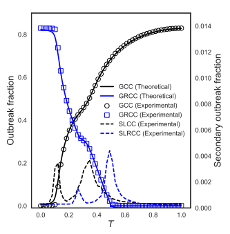

Two-strain co-infection paper accepted
After what feels like a very long time in review, our paper on the dynamics of co-infection on clustered networks has been accepted for publication.
We submitted in December, and the paper's been back and to with the editors and reviews. But happily it's now got through.

This is another example of how clustering in networks -- as is typically found in social networks -- affects the way processes work over them. The plot also shows a relationship between the sizes of largest and second-largest connected components that we don't yet understand, but might be important both for forecasting and (possibly) countermeasures.
Peter Mann, V. Anne Smith, John Mitchell, and Simon Dobson. Co-operative co-infection dynamics on clustered networks. Physical Review E, April 2021. URL: https://doi.org/10.1103/PhysRevE.103.042307.